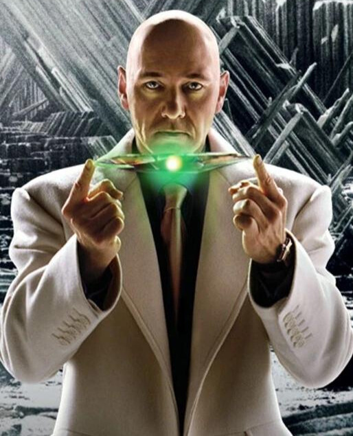

LEX LUTHOR
Alexander Joseph "Lex" Luthor é um supervilão fictício que aparece em histórias em quadrinhos publicadas pela editora americana DC Comics. Criado por Jerry Siegel e Joe Shuster, Lex Luthor apareceu pela primeira vez na Action Comics #23 (Abril de 1940) e desde então tem sido o arqui-inimigo do Superman. O personagem é um poderoso bilionário corrupto, magnata, cientista, inventor, filantropo para a cidade de Metrópolis e uma das pessoas mais inteligentes do mundo. Uma figura pública carismática e bem conhecida, ele tem a intenção de livrar o mundo do super-herói alienígena Superman, que Lex Luthor vê como um obstáculo aos seus planos megalomaníacos e como uma ameaça à própria existência da humanidade. Como um supervilão de alto status, ele também entra em conflito com o Batman e outros super-heróis do Universo DC. Lex Luthor tradicionalmente não tem superpoderes ou uma identidade secreta e, normalmente, aparece com uma cabeça careca. Ele usa periodicamente seu traje de guerra, uma armadura de batalha de alta tecnologia dando-lhe maior resistência, voo, armamento avançado, entre outras capacidades. O personagem foi classificado em 4º na lista dos 100 Maiores Vilões de Histórias em Quadrinhos de Todos os Tempos da IGN e como o 8º maior vilão pela Wizard em sua lista dos 100 Maiores Vilões de Todos os Tempos.